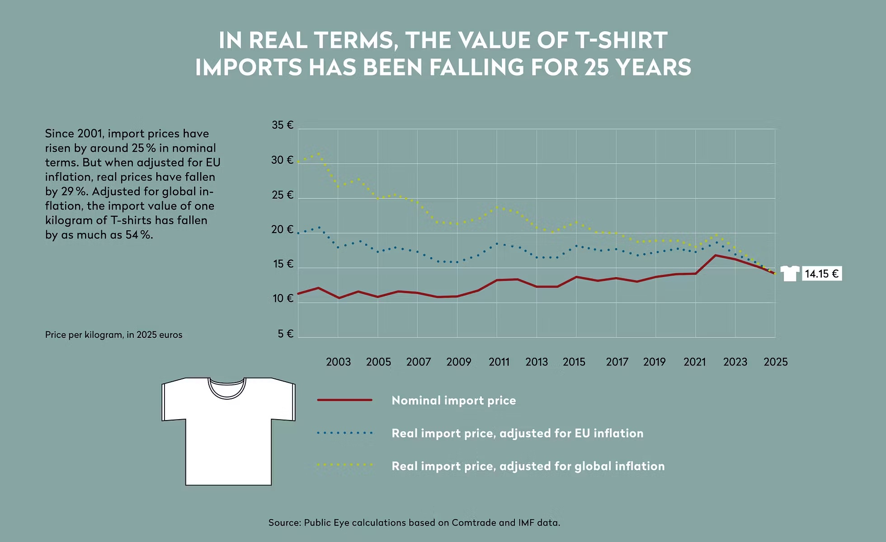

Major fashion brands today pay hardly more for a cotton T-shirt than they did 20 years ago. Adjusted for inflation, the sourcing price has actually fallen – in the EU, for example, by as much as 30%. The sustained erosion of sourcing value in real terms undermines suppliers’ economic resilience, depresses wages and throws into question the credibility of industry claims on sustainability and a just transition.
Today, many buyers still source a standard cotton T-shirt at around USD 2–3 per piece, with unit prices below USD 1 persisting in parts of the market.
Overall, price levels have remained very low. In 2025, the average EU import price stood at just USD 16 (EUR 14.15) per kg. Import prices from Bangladesh, the main supplier to the EU, were even lower at around USD 13 per kg. That is equivalent to roughly EUR 11 for one kilogram of new T-shirts – a strikingly low price.
For comparison, the lowest prices for a basic T-shirt at major fashion retailers in Switzerland range from around CHF 9 to CHF 17 (EUR 10-19). In other words, the revenue from selling a single T-shirt at retail can be enough for major brands to buy about one kilogram of them at factory level.
“Real sourcing prices are contracting.”
// Martin Abercrom / investigator for the Trois Cent 60
Between 2001 and 2025, the world economy grew on average by around 3% per year, and global inflation led the average household living costs to more than double. In contrast, long-term data for EU T-shirt imports display only a meagre nominal purchasing price increase of 0.9% per year during the same period. When adjusted for EU inflation, this development translates into a real price erosion of −1.4% per year.
Nominally, EU buyers today pay roughly a quarter more for cotton T-shirts sourced abroad than they did 25 years ago. But in real terms, they are paying 30% less.

The geographical pattern of trade illustrates how buyers have shifted sourcing towards locations that offer the lowest prices at scale. In the EU – the world’s largest import market for T-shirts – Bangladesh has become the dominant country of origin, reflecting its role as a global hub for large-volume, low-price knitwear. In 2025, 61% of T-shirts imported to the EU were sewn in Bangladesh. This is not diversification. It is a deepening concentration around the lowest-cost production base, reinforcing dependency on both sides of the relationship.
Trois Cent 60 had access to company-specific trade data. These reveal that purchasing prices among the largest fashion companies are clustered within a relatively limited – and above all low – range, despite notable differences in market positioning.